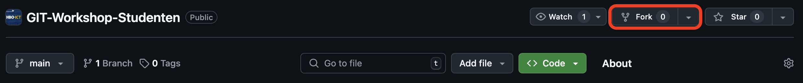

In de volgende opdrachten gaan we dieper in op de functies die Git(Hub) biedt. De eerste stap is het forken van een repository.
Stap 1: Open de voorbeeld repository.
Stap 1.1: Klik op de Fork knop om een nieuwe fork van deze repository te maken.

Figuur 1: Fork knop op de GitHub website in de GIT-Workshop-Studenten repositoryDe fork zal automatisch de naam en beschrijving van de originele repository overnemen. Het is optioneel om deze naam en beschrijving aan te passen voor deze workshop.
Stap 1.2: Deselecteer het vakje Copy the main branch only.
[!warning] Let op! Zorg ervoor dat Copy the main branch only is uitgeschakeld!
Stap 1.3: Klik op Create Fork.
Stap 2: Clone de geforkte repository naar je laptop.
Stap 2.1: Kies de optie For my own purposes wanneer je de geforkte repository clonet.
[!warning] Controle branches Controleer of de repository de branches main en dev bevat voordat je verder gaat met de volgende opdracht.
[!success] Voltooid! Je hebt nu de GIT-Workshop-Studenten repository succesvol gecloned.
De geforkte repository bevat nu twee verschillende branches, main en dev. Om de OTAP-strategie uit te breiden, voegen we een staging branch toe.
Stap 1: Open de geforkte repository in GitHub Desktop.
Stap 2: Klik op de knop Current Branch in de header van het programma.
Stap 2.1: Klik op de knop New Branch.
Stap 2.2: Geef de branch de naam staging.
Stap 2.3: Stel de based branch in op main.
[!success] Top! Je hebt een nieuwe branch gemaakt!
Om te voorkomen dat belangrijke delen van het project per ongeluk worden gewijzigd, kun je beschermingsregels instellen voor branches.
Stap 1: Open de repository op de GitHub website.
Stap 1.1: Ga naar de Settings pagina van de geforkte repository.
Stap 1.2: Klik op Branches onder het kopje “Code and Automation”.
Stap 2: Klik op Add Classic Branch Protection Rule.
Stap 2.2: Vul main in bij Branch name pattern.
Stap 2.3: Vink de volgende opties aan: • Require a pull request before merging • Lock branch
Stap 2.4: Klik op Create om de regel toe te passen.
[!success] Goed gedaan! • Je hebt een repository succesvol geforkt. • Je kunt branches aanmaken. • Je hebt beveiligingsregels toegepast op branches!
In een terminal kunnen ook acties worden uitgevoerd met betrekking tot branches.
Voor het uitvoeren van deze commando’s, moet de terminal de folder hebben van de repository:
cd pad/naar/je/repository
git branch
# of
git branch -a
# of
git branch -r
git branch: Om een lijst van de lokale branches in te zien.-a: om een lijst van branches in te zien van zowel de lokale als de remote.-r: om een lijst van remote branches in te ziengit branch [NAAM_VAN_BRANCH]
[NAAM_VAN_BRANCH] veranderd moet worden met de eigen gekozen naam.[!warning] Let op Zorg ervoor dat je de veranderingen gecommit hebt voordat je van branches wisselt (Commiten zal in [[4. Git Commits]] verder worden uitgelegd).
# checkout
git checkout [BRANCH_NAAM]
# switch
git switch [BRANCH_NAAM] #dit kan alleen met git versie 2.23+
# checkout met aanmaken
git checkout -b [NIEUWE_BRANCH_NAAM]
# eigen basis (base) aangeven
git checkout -b [NIEUWE_BRANCH_NAAM] [EEN_HUIDIGE_NAAM]
checkout: als je wil wisselen van branch kan dat door [BRANCH_NAAM] te veranderen met de branch naam waar je naartoe wil wisselen.switch: Dit geeft hetzelfde resultaat als checkout en is alleen mogelijk in Git versie 2.23+-b: hiermee weet Git dat er een nieuwe branch aangemaakt moet worden. Bij dit commando wordt gelijkt naar de nieuw aangemaakte branch geswitched. De basis voor de nieuwe branch wordt de branch waar nu op gewerkt wordt.#Lokale branch
git branch -d [BRANCH_NAAM] # Veilig verwijderen (alleen als gemerged is)
git branch -D [BRANCH_NAAM] # Geforceerde verwijdering
#Remote branch
git push origin --delete [BRANCH_NAAM]
origin (de remote) dat een branch met de naam[BRANCH_NAAM] verwijderd moet worden.[!warning] Let op Wees bewust van het verschil van
-den-D.